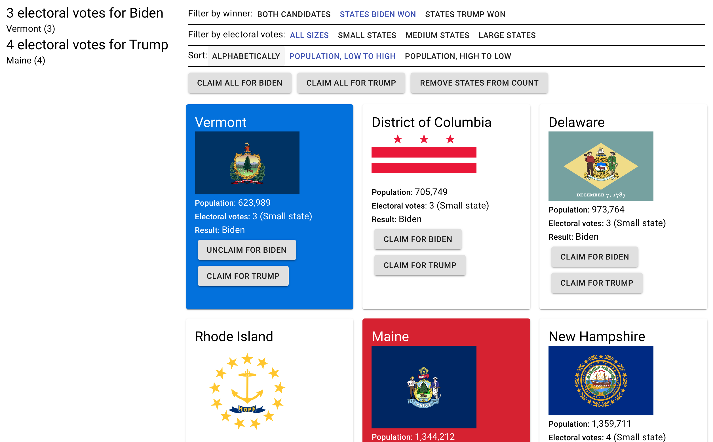

Electoral Votes List Interface
Assignment
Use React to create a list interfaces that filter, sorts, and aggregates list items.
Use of Application
During the 2020 election, I became very aware of the mechanics of the electoral college. As states are decided, I wanted to count up the electoral college votes of the candidates to see who was closer to the 270-vote threshold. This app is used to analyze election results by allowing the user to sort states by whether they eventually went to Trump or Biden, filter by category of electoral votes, and sort by population to claim states for their candidate.
Implementation
Deployed website here and Github repository here
Usability Considerations
The app was made learnable by using standard conventions of list interfaces and clear button labels. The app is memorable becuase it shows all information the user might need to know. The app is efficient due to the "Claim all for Biden", "Claim all for Trump", and "Remove states from count" buttons that allow high-efficiency users to easily claim states.